Cinta Aveda Institute · Video motion · Plan 3 · October 30, 2026
Motion plan, on the floor.
The same reference we studied for Kamino Real, How to Make Collage Animations like Johnny Harris (Denys Zhylin Tutorials, 6:50), rebuilt for a beauty school at 305 Kearny St on the Cinta Aveda Video Style kit. Everything here is built from Cinta's own Instagram: all 48 reels pulled and transcribed, real students, real guests and their real words. Round 4 comes first: the rewatch, the type study, the hero, seven new samples with directions and every scene relit, all to one set of text rules. Then the text audit that checks every clip against those rules, the plan itself, the footage library and the archive photos. Earlier rounds sit in an archive at the end.
34 clips, every one audited0 text failures48 s hero, cut end to end7 videos on the slate, each with a preview7 new samples with directions8 salon transitions48 reels pulled and transcribed53 archive photos
Round 4 · rewatched, brighter, bigger type
Brighter, bigger, more of the reference.
Updated: no text sits straight on footage any more, hooks and captions are on paper, every size is up again for phones, and the B-roll behind each hook is scored and chosen. See Text on footage.
I rewatched the whole reference, all 6:50 of it, a frame every half second, then stepped through every moment with text at full resolution. It is a brighter film than I had made it: mostly white and cream paper, sunlit colour, and a run of playful devices we had not used. Everything below is rebuilt on that: a light look, a real type system at bigger sizes inside the safe box, seven new samples each with a direction to make it, and every round 3 scene relit.
0:00Hook. A real cut finishing, the HookTitle on paper strips over the salon.
0:02Three programs. Bursts, brush arrows, typed names on white paper.
0:09Mannequin to the floor. Her own voice over a ruler of clock hours.
0:17Clock hours. Documents as data on petal paper, numbers inside the sheets.
0:22Who you learn with. Instructor and silhouettes.
0:28The front desk. 1942 to today, captions in the caption band.
0:34Wendy's student card. Her three words as pills, a glint on the certificate.
0:39Come see the floor. The paper map, ribbons and Cinta's pin.
0:45Book a tour. SwatchWipe into the light EndCard.
What the rewatch found
Quality
The reference
Round 3
Round 4
Ground and light
Mostly white or cream paper, sunlit landscapes, saturated colour; dark only for the presenter and a vault.
Espresso and teal-felt grounds, a heavy dark vignette, a sepia grade.
White, fog, petal and marigold papers; a light warm vignette with a daylight bloom; grade +5% brightness, +7% saturation, no sepia.
Type size
Titles fill a third of the width; a chapter word fills most of it.
Titles 40 to 60px on a 720 frame; labels in 20px mono.
Titles 95 to 130px at weight 700, subtitles 50px and up, chapter words 150 to 170px, numerals 130px and up, hooks 112px, captions 56px. Rows fit themselves to the column.
Type system
One classic serif in small caps for names, places and labels; italic or script for quotes; one red accent for reactions; numbers set as display.
The serif was there, but small, with mono labels mixed in.
Bodoni Moda as the one collage voice: small caps, italic, display numerals. The kit's Fira stays for hooks, captions and the end card.
Placement
Title centred above the subject, label touching the thing it names, generous empty paper around.
Some labels, captions and credits sat below y 832, where TikTok's caption and buttons cover them.
Everything inside the kit's safe box, and nothing straight on footage: hooks and captions on white paper strips, titles on fog cards, the phrase on the orange swatch.
Playful devices
Price tags on strings, a licence with highlight pills, a setting card with stickers, ribbons on a map, a portrait pin, a glint on gold.
Not used.
All of them, on Cinta's own footage: seven new samples below.
Left means back in time
The camera travels left along a ruler of years.
The meaning card had no real leftward move.
A ruler from 2026 back to 1920, with three Library of Congress photographs.
Small details
Tags swing to rest, gold glints once, highlighter wipes behind one word, stickers wobble.
Mostly pops and slides.
Swinging tags, a glint on Wendy's certificate and the pin, marigold highlighter, sticker edges, pills landing on the spoken word.
End card
(Not in the reference.)
Espresso, the kit's EndCard.
A light version on fog paper, same layout and motion, for you to approve as a kit change. Every preview uses it.
Type study
How the reference sets type, and the editorial system Cinta's collage layer uses from now on. It stays inside the kit: the same four families, Bodoni Moda as the editorial voice (the didone of fashion magazines, right for a beauty school), the kit's sizes for the brand layer, and the kit's safe box.
How the reference sets type
Title over subtitleName in small caps, its role under it at about half the size, centred over the figure, warm grey ink, nothing else in the frame.
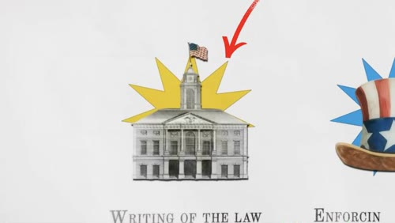
Label under the thingSmall caps, tracked out, set just under the object it names; a hand-drawn arrow does the pointing.
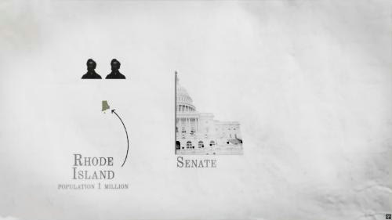
Two sizes, one arrow“Rhode Island” large, “population 1 million” tiny under it; the arrow carries the eye to a shape the size of a fingernail.
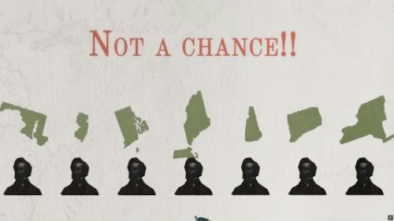
The reaction lineA short exclamation in red small caps above a row of figures. On light grounds the kit bans orange text, so Cinta uses espresso or bay-teal.
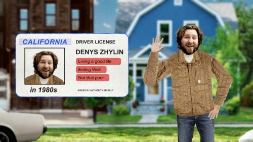
Highlight pillsThree short traits in coloured pills on an ID card: the funniest frame in the video. Cinta's version uses Wendy's own words.
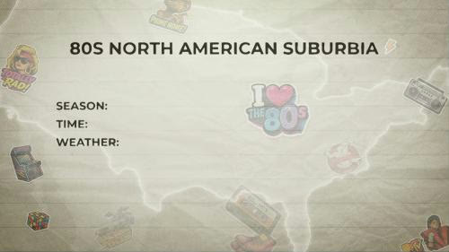
Fields typed on a cardA setting card with typed fields and sticker icons. Cinta's fields are facts only: place, city, programs.
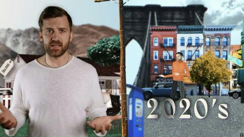
A decade word in the sceneBig serif numerals that sit on the street with a shadow, not floating on top.
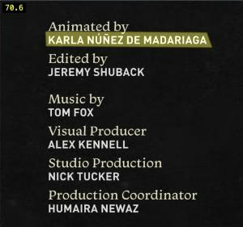
Highlighter behind one nameOne yellow-green marker bar behind the name that matters. Cinta's is marigold, multiplied into the paper.
Cinta's editorial type system
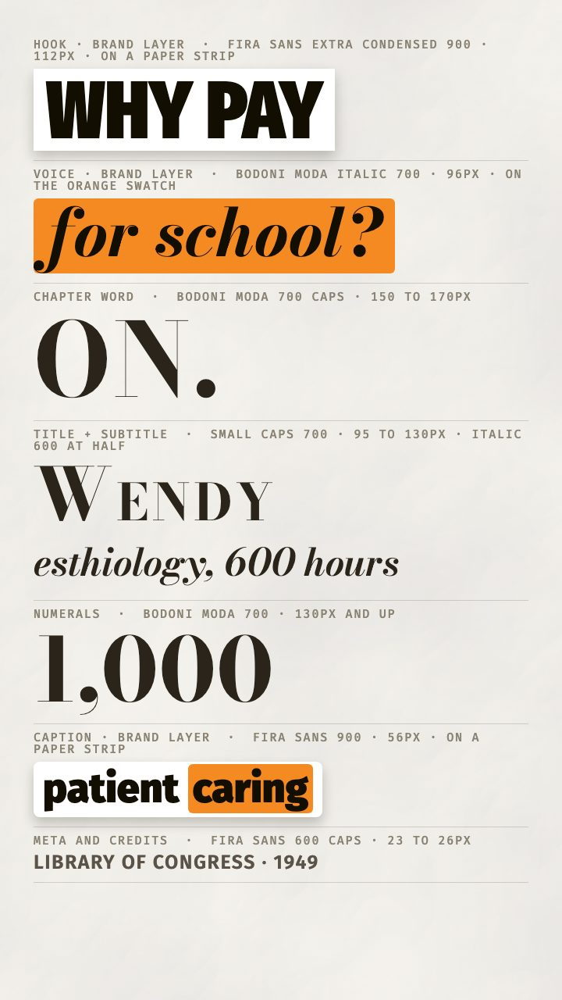
Role
Face
Size at 720 (1080)
Ink
Where
Motion
Hook (brand layer)
Fira Sans Extra Condensed 900, caps, each line on its own white paper strip
112 (168)
Espresso on paper
Upper band, left at x 43, strips fitted to 597
Whole lines rise in 8 frames, 3 apart, each strip tilted a degree
Voice (brand layer)
Bodoni Moda Italic 700 on the orange swatch
96 (144)
Espresso on orange
Under the hook
With the hook
Chapter word
Bodoni Moda 700 caps
150 to 170 (225 to 255)
Ink on paper; on footage, on a white paper strip
Upper band, centred, never wider than 594
One letter a drawing, a half-tone lead letter
Title
Bodoni Moda 700 small caps
95 to 130 (143 to 195)
Ink on paper; on footage, on a fog paper card
Centred on the column, x 83 to 637
Typed two letters a drawing
Subtitle
Bodoni Moda italic 600, or small caps 700
50 to 65
Same as the title
4px under the title
Typed after the title
Numerals
Bodoni Moda 700, lining
130 to 190
Ink on paper; white over a photograph's foot
On the object, or across its foot
Typed
Label
Bodoni Moda 700 small caps
60 to 90
Ink; on footage, on a fog card
Touching what it names
Typed
Program label on footage
Fira Sans Extra Condensed 900 caps on a white strip
44 (66)
Espresso on paper
Caption band, left at x 43
Pops in 4 drawings
Tags, cards, pills
Bodoni 700 small caps 64; pills Fira Sans 800 29
Espresso on program colours; white on bay-teal
On the subject
Drop and swing, or pop on the spoken word
Captions (brand layer)
Fira Sans 900 on a white paper strip, active word on orange
56 (84)
Espresso on paper
Caption band, y 712 to 832
Word by word, from the transcript
Meta and credits
Fira Sans 600 caps, or Fira Mono 500
23 to 26 (35 to 39)
Stone on paper; on footage, on a white strip
Beside the picture it credits
Appears whole
Placement
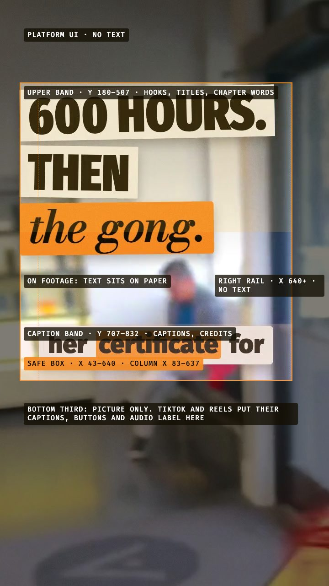
Nothing sits straight on footage. Every hook line, caption, title and label over video sits on paper: white strips for hooks and captions, a fog card for serif titles, the orange swatch for the Bodoni phrase.
Pick B-roll for the space behind the text: a calm top third (sky, a wall, a ceiling, a soft room) with the action below y 600. Every reel moment is scored for it; prefer a shot under 10.
Sizes for a phone: hooks 112, captions 56, titles 95 and up, labels 60 and up, subtitles 50 and up. Nothing but credits under 36.
One serif voice for all collage type: Bodoni Moda at 700, italic at 600. Sans only for the brand layer, at 800 and 900.
Two sizes per frame plus one meta size, and at least 2 to 1 between title and subtitle.
Titles centre on the column; labels touch what they name; credits sit beside their picture.
Nothing outside x 43 to 640 and y 180 to 832. The bottom third is picture only.
Ink is warm (#2B241A) on paper. Emphasis is italic, the orange swatch or a marigold highlighter, never orange text on a light ground.
Collage type types on two letters a drawing, as the reference does: an exception to the kit's no-typing rule that needs your sign-off. The brand layer rises whole lines.
Text on footage
White type straight on B-roll failed on busy shots, and the type was too small for a phone. Now nothing sits straight on footage, sizes are up again, and the B-roll behind each hook is chosen for the space where the text goes. Every reel was scored, a frame every quarter second, for how busy the zone behind the text is (edges plus blown-out white, y 180 to 600) and how much happens below it.
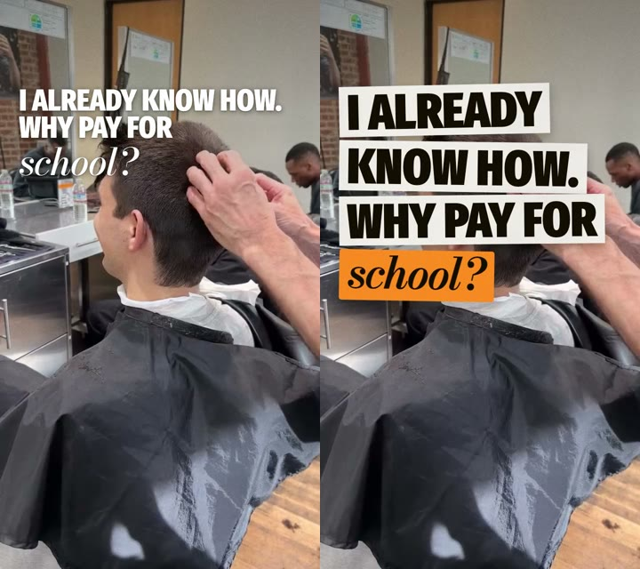
The hookEach line on its own paper strip, the phrase on the orange swatch, 112px instead of 68. Left: before · right: now.
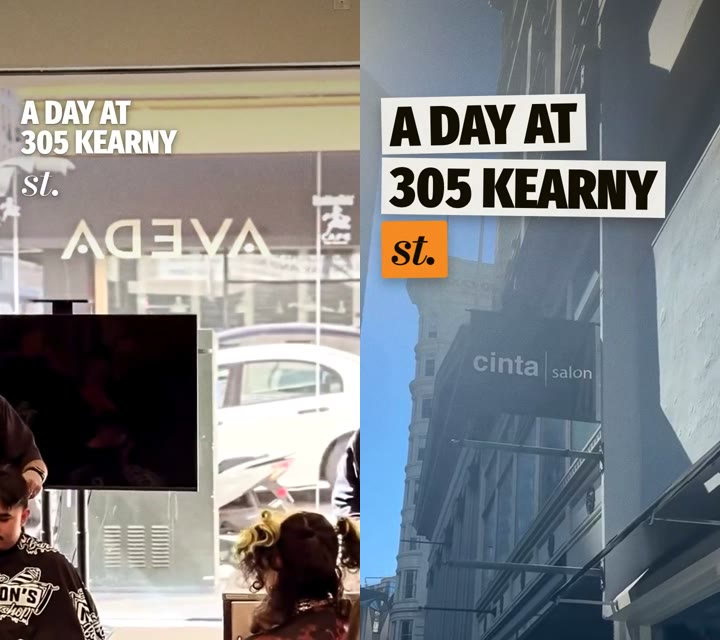
A day at 305 Kearny st.New footage: Cinta's storefront and open sky behind the title (busy score 5.6, down from 25.6). Left: before · right: now.
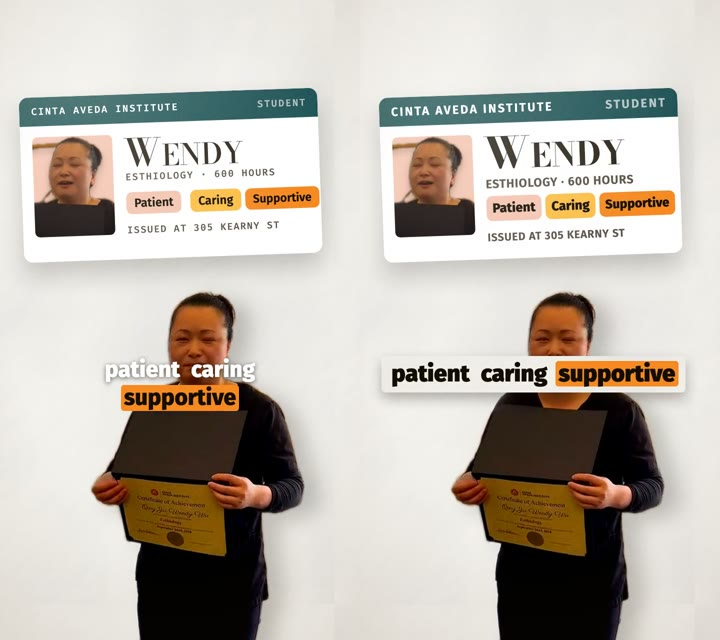
CaptionsOn a white paper strip at 56px, active word on orange, instead of white text with a shadow. Left: before · right: now.
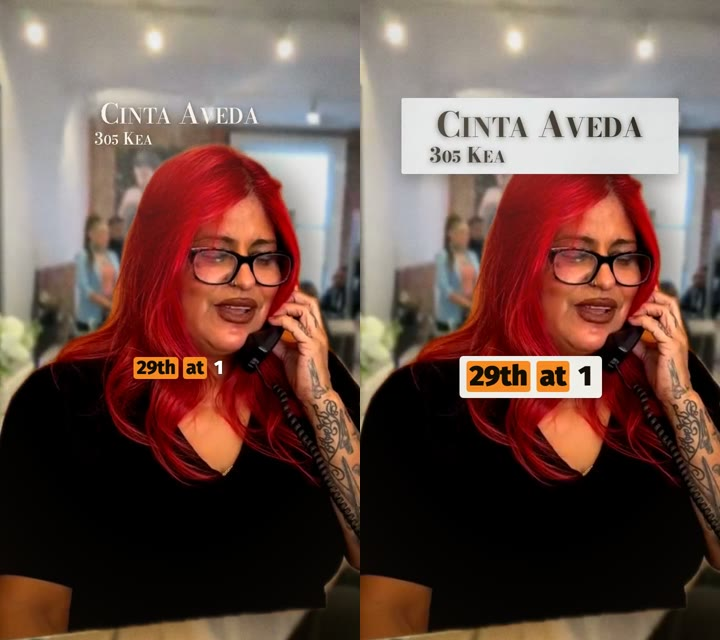
A title on footageThe serif title sits on a fog paper card instead of light type over the photograph. Left: before · right: now.
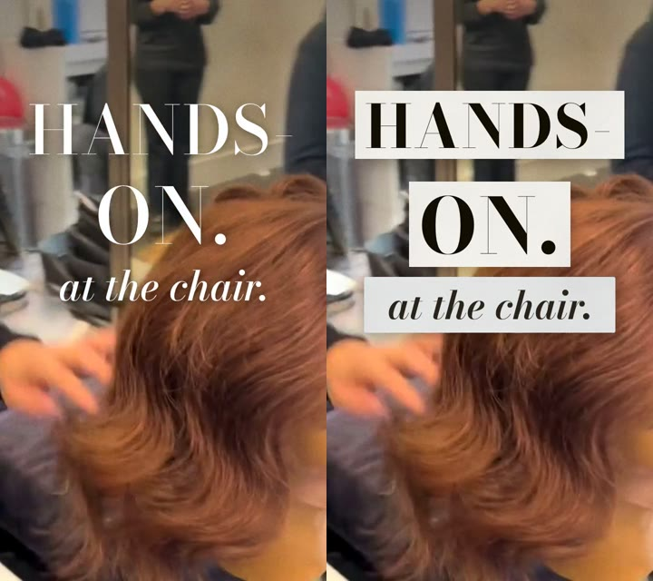
The chapter wordEach line on a white paper strip in espresso; “at the chair.” on a fog card. Left: before · right: now.
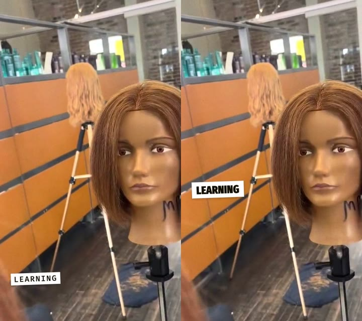
Program labels44px condensed caps on white strips, inside the caption band, instead of 26px mono at the bottom edge. Left: before · right: now.
Opener
Shot
Busy behind the text
Call
Hook: why pay for school?
DecgnnAB6gW 0:00.6
17.5
Kept. The cut sits low in the frame, under the strips; the salon behind is what the strips cover.
A day at 305 Kearny st.
Ddj7hD2hxvR 0:01.5 (was DdrqqafyV6N)
5.6 (was 25.6)
Swapped. Cinta's storefront from the street with open sky where the title sits.
1,000 hours, then state boards
DeZ1CbNBeDV 0:02.3
15.1
Kept, with the footage moved down 150px so the mannequin's face clears the strips.
Things nobody tells you about the kit
Ddbs8qQNavI 0:03.2
13.8
Kept, moved down 170px so her face and the box sit below the strips.
Cosmetology in 15 seconds
DczOdF4BoQE 0:12
14.2
Kept. Hair against the plain Aveda backdrop.
600 hours, then the gong
DeAXoRQy_2W 0:00
13.6
Kept, moved down 60px; the hook now leaves at 2.4 s, as the kit asks, so her face is clear for the rest.
Before and after, round 3 to round 4
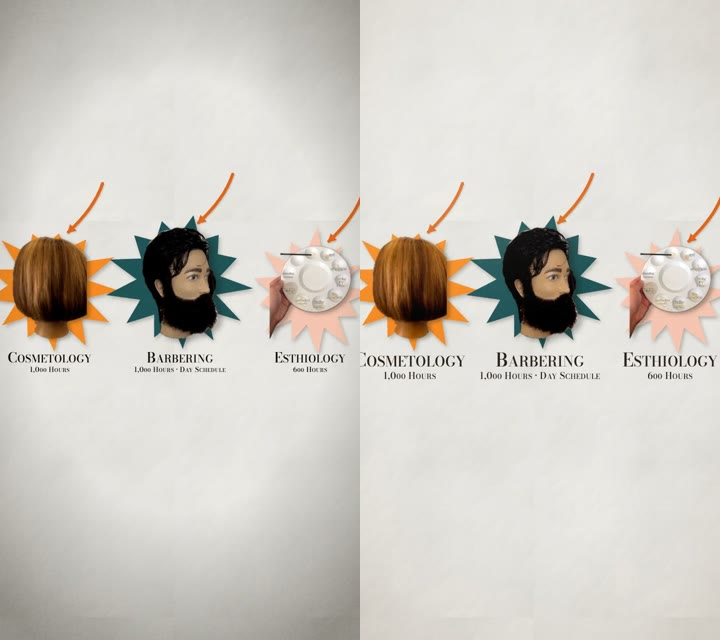
ProgramsRound 3 left · round 4 right
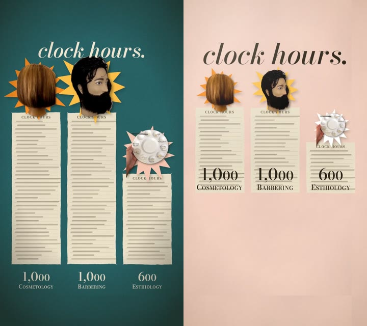
Clock hoursRound 3 left · round 4 right
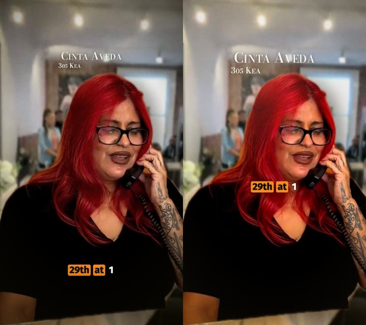
Front deskRound 3 left · round 4 right
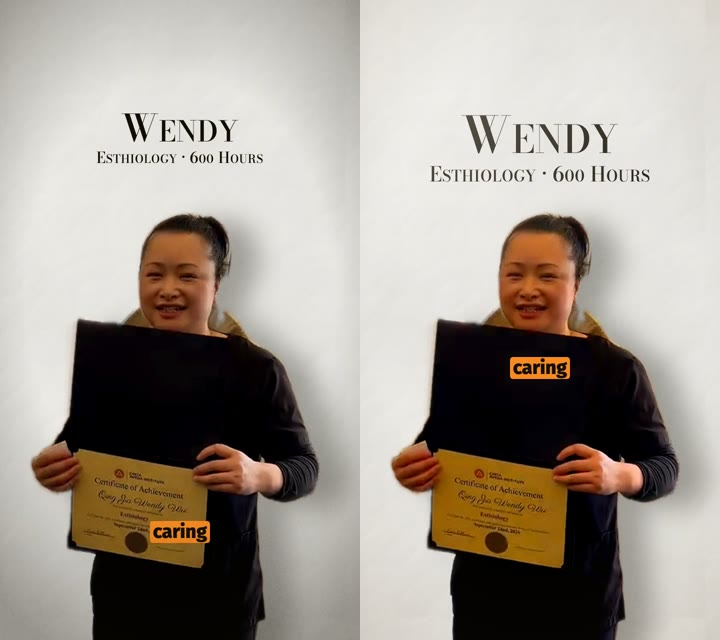
WendyRound 3 left · round 4 right
New samples, with directions
Seven new samples, each built on a reference moment we had not used, each on Cinta's own footage or facts. Every card gives the reference frame, the clip, and a direction to make it: what moves, at what timing, what it sounds like, and what to shoot.
Reference 3:29 · Licence with highlight pills · glint
Student IDNew in round 4
A Cinta student card slides in beside Wendy; three pills land on her own words, patient, caring, supportive, as she says each one, and her certificate glints once.
Direction
Lift Wendy out of DeAXoRQy_2W (8.9 to 13.3 s) and track her head so the handheld shot sits still on white paper.
Card 597×330 at the top of the safe box: bay-teal band in Fira Mono 19, name in Bodoni small caps 76, meta in mono 19, photo window in petal.
Slide the card in from the left in 4 drawings with a 30px overshoot. Each pill pops on its word's timestamp from the transcript.
Glint at 3.75 s, 4 drawings. Captions in the caption band.
Sound Slide, a pop per pill, one soft flash on the glint.
Shoot Any student holding something they earned, waist up, facing a window.
Reference 3:23 · Price tags on the house and the car
Tags on stringsNew in round 4
Each program's tag drops onto real footage of it and swings to rest: Cosmetology on a bob, Barbering on a beard mannequin, Esthiology on a student. Straight cuts, one tag a shot.
Direction
Three shots of 1.7 s, locked off, subject centred with headroom for the tag.
The tag drops 0.15 s into the shot on a 96px string from the top of the safe box and swings -34°, +16°, -9°, +5°, -2.5°, +1°, 0° over 7 drawings.
Tag in the program colour; Bodoni small caps 52, hours in mono 19; white ink on bay-teal.
Sound A drop and a tick per tag; the esthetics shot keeps its room sound.
Shoot Two seconds of each program's signature object or service, phone on a stand.
Reference 3:32 · “80s North American suburbia”
Setting card with stickersNew in round 4
A setting card on fog paper over a faint street grid: “a day at Cinta Aveda”, then place, city and programs typed in, with a marigold highlighter on “Three” and four stickers along the bottom.
Direction
Fog paper with the street grid at 16%.
Italic “a day at” over small caps “Cinta Aveda” at 100px.
Fields 0.6 s apart: key in mono 22, value in Bodoni small caps 48. The highlighter wipes on in 3 drawings.
Stickers are objects lifted from the reels with a 5px white edge; they pop 3 drawings apart and wobble ±1.2°.
Sound A key tap per field, a pop per sticker, a pen stroke on the highlighter.
Shoot Nothing to shoot: built from reels Cinta already posted. Facts only.
Reference 0:49 and 5:54 · Ribbons on the landscape · a portrait pin on the map
Paper map, ribbons and a pinNew in round 4
Downtown San Francisco assembles in four torn strips, ribbons name Kearny St and Union Square, Cinta's pin drops on 305 Kearny and glints, and the camera pushes in on it.
Direction
Streets drawn to the real grid: Kearny, Grant, Stockton, Powell; Pine, Bush, Sutter, Post, Geary; Market on the diagonal.
Strips slide in from alternating sides, 3 drawings apart. Ribbons drop and settle in 3 drawings.
The pin drops 140px with a squash, then a glint. The camera goes from 0.96 to 1.32 over 26 drawings.
Title “305 Kearny St” with “a few blocks from Union Square”: confirm that wording with Cinta.
Sound Paper slides, two ribbon drops, a stamp on the pin, a soft flash.
Shoot Nothing to shoot.
Reference 4:59 · MOVEMENT over the painting
A chapter wordNew in round 4
“HANDS-ON.” set as big as the frame allows, letter by letter, over two real shots of hands at work, then “at the chair.” in italic on the cut.
Direction
Two lines, Bodoni Moda 168px, tracked +3%, white with text-lift over a top scrim.
One letter a drawing, with the next letter at half tone. Straight cut at 1.8 s; italic 89px types in on the second shot.
Sound A key tap per letter, a pen stroke on the italic.
Shoot Close shots of hands working: blow-dry, curls, a fade. Two seconds each.
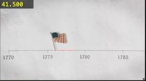
Reference 0:41 · The ruler of years
Left means back in timeNew in round 4
The camera starts on Cinta today and travels left along a ruler, stopping at a 1949 beauty school, a 1942 salon and a 1920 hygiene class, with the orange line trailing back to now.
Direction
White paper and a ruler at y 826. Stops 600px apart, so the next print is already in view as you travel.
Each leg starts 0.55 s early and lands in 7 drawings. The dot rides the camera.
At each stop the label types in the upper band, the print drops in 4 drawings, and the year sits big and white across the print's foot.
Photographs: Library of Congress, credited in frame.
Sound A travel whoosh per leg, a drop per print.
Shoot Nothing to shoot; today's frame is from DdnBYoERYz1.
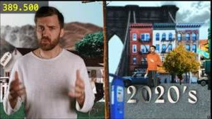
Reference 6:29 · Presenter on one half, collage on the other
Split screenNew in round 4
The nurse from Cinta's reel talks on the left half; on the right, a 1920 nursing class drops in on “nurse” and “40+” types in on “40”, from her words “for over 40 years”.
Direction
Her footage fills the left 372px; white paper fills the right with a torn edge and a shadow.
Print drops on the word “nurse”; 190px numerals type on “40”; “years a nurse” in small caps.
Captions stay in the left half, in the caption band.
Sound Her real voice; a drop and a stamp.
Shoot Any student interview: frame the speaker left of centre so a half-frame crop holds their face.
Every round 3 scene, relit
The same scenes as round 3, re-rendered in the bright look with the new type sizes and placements. The slate's previews, the transitions and the movement cards below now use these.
Hook
Programs
Mannequin to the floor
Clock hours
Who you learn with
The front desk
Wendy
Inside a beauty school
In the room
The floor in layers
The reveal
What's in the kit
Light EndCard (proposal)
Your calls
Light EndCard. The kit's EndCard is espresso or bay-teal. The previews use a light fog version with the espresso lockup. Keep it, or go back to espresso?
Typing on. The kit bans letter-by-letter typing. The reference types its collage labels on. I kept the kit rule for the brand layer and the reference's for collage type.
Text on footage. Captions on white paper strips at 56px, and hooks on strips at 112px, go past the kit (captions 45px with no box, hooks white with a text shadow). Keep them as the new rule for the kit?
Map wording. “A few blocks from Union Square” needs Cinta to confirm it.
Round 6 · the text audit
Every clip, checked.
The rules are only useful if every example follows them, so they are now a script, not a judgment. tools/audit.ts steps through every scene a tenth of a second at a time and checks every piece of visible text. A finding has to hold for three steps, so a single pop-in frame does not count. Every clip on this page above the archive passes: 34 clips, 3112 frames, 567 distinct text items, 0 failures.
Size. 36px and up after the camera's zoom; credits and the legal line 22px and up.
Safe box. Inside x 43 to 640, y 180 to 832 (text sliding in or out of frame is skipped).
On paper. Any text over footage sits on paper: a strip, a card, a tag or the orange swatch.
Weight. Bodoni Moda 600 and up; Fira Sans 600 and up; Fira Mono only for credits.
Johnny Harris collages explain things there is no footage for: history, numbers, processes. Cinta has plenty of footage of the floor. What it lacks is a way to explain the parts people cannot see in a 10 second clip: what 1,000 clock hours look like, why school beats YouTube tutorials, how a first week on a mannequin becomes a guest in your chair, and where Kearny St sits in a long line of salons and barbershops. That is where the collage goes. The floor stays footage-first, as the kit says.
The visual world is the salon's own paper: color swatch cards with their punched ring hole, foils, end papers, timecards and clock-hour logs, consultation cards, state board flashcards, the student kit box, mannequin heads, the brick wall and mirrors at 305 Kearny. Plus beauty's own history for then and now: 1860s Kearny Street, an 1887 barbershop, a 1942 New York salon, a 1949 beauty school.
Brand layerSmooth, 30 fps, from the kit
HookTitle, UGCCaption, SwatchTag, FactCard, QuoteCard, SwatchWipe and EndCard stay exactly as specified: 8 frame ease-out entrances, the orange active-word chip, one Bodoni phrase per screen, everything in the safe box. This layer is the brand, so it never changes.
Collage layerStepped, 10 drawings a second
Cutouts of students, real paper scans and archive photos animate on threes: a new drawing every 3 frames at 30 fps. That is the reference's handmade feel (it uses 12 a second) on a frame grid that divides 30 evenly. Students cut out of their footage keep playing at full rate.
Instagram already shows the material. Students post their first men's cut, learning to shave, a doll head washed for the first time (“5 washes later and I still smell plastic”), a kit unboxing that “felt like Christmas,” and a day-8 posting streak under #avedacreator. Cinta posts Tuesday group tours and Wendy's graduation. The collage gives those moments a spine.
03 · Where the reference meets the kit
Brand rules first.
Updated rules. The kit frames below show its original type. For hooks, captions, labels, credits and the end card, the text rules in Round 4 and the audit replace them: text over footage sits on paper, hooks 112px, captions 56px, nothing under 36px except credits.
The kit is stricter than the reference in six places. Where they disagree, the kit wins for paid ads. For longer organic pieces, the plan opens a little room and says so. Four of these are yours to decide, at the bottom of the page.
The reference does
The kit says
This plan
Everything animated at 12 a second
Timeline at 30 fps, 8 frame entrances
Master at 30. Collage layer on threes, 10 drawings a second. Brand layer stays smooth. Decision 1
Small caps labels type on, 2 letters a drawing
No letter-by-letter typing
Labels land whole, in Fira Mono on a paper strip, with a punch sound. The one exception to test is the name on the SwatchTag. Decision 2
A designed transition between most collage scenes
One designed transition per ad: SwatchWipe
Ads under 20 s: SwatchWipe only, straight cuts everywhere else, which is also what the reference does out of the host. Pieces over 30 s may add up to two from the salon set below. Decision 3
Push blur and whip pans
No zoom blurs, glitches or light leaks
Push blur is dropped. The whip becomes a cutting cape swung past the lens: a physical wipe, no blur.
Full-screen collage boards
Footage first; graphics frame it
Collage stays under 40 percent of an ad's runtime and never opens it. Frame 1 is always a real student at work.
Big punchline type, red arrows, bursts
One swatch, one Bodoni phrase per screen; orange to a tenth of the frame
Arrows are drawn in espresso on light paper and white on footage. One burst per piece, in petal. The swatch carries the words that matter.
The brand layer, from the kit
HookTitle
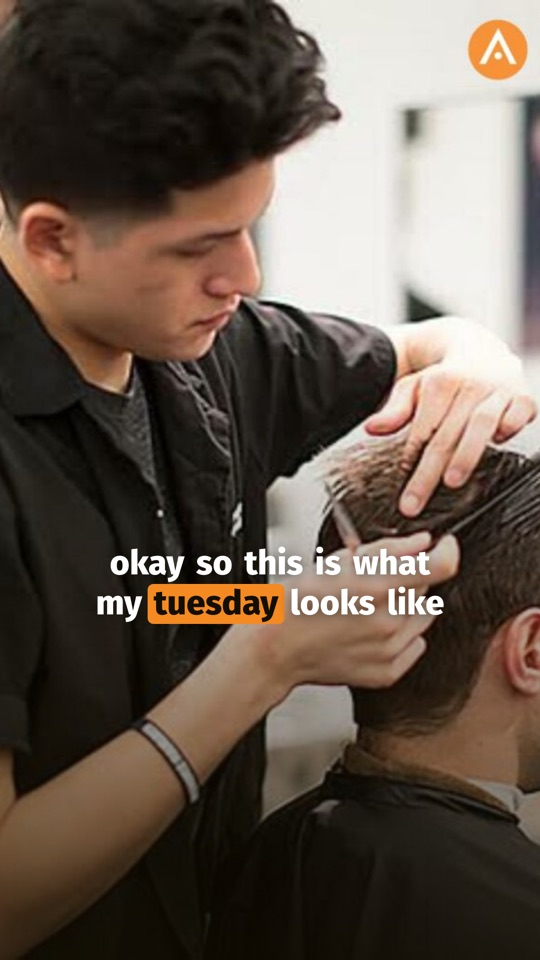
UGCCaption
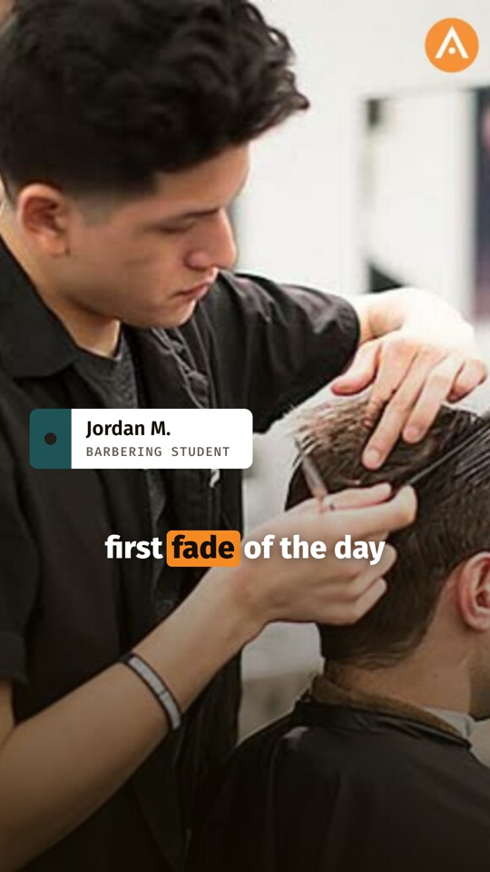
SwatchTag
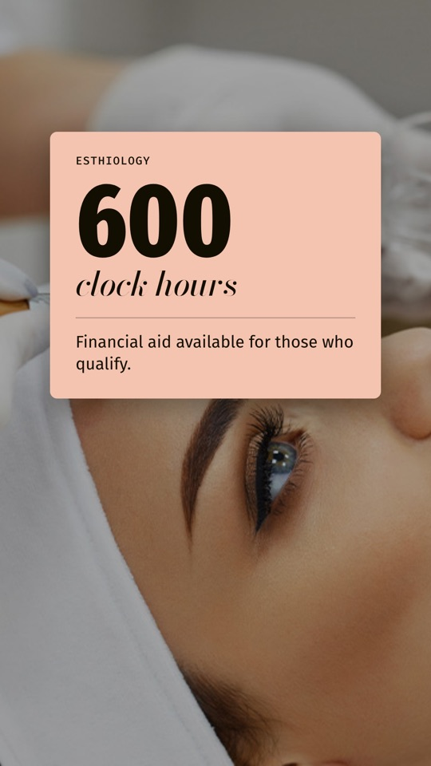
FactCard
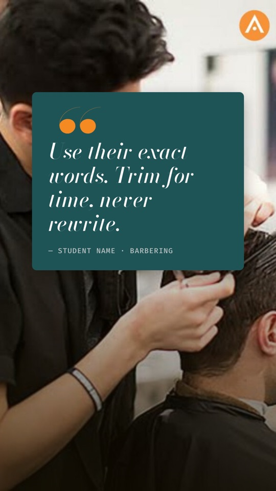
QuoteCard
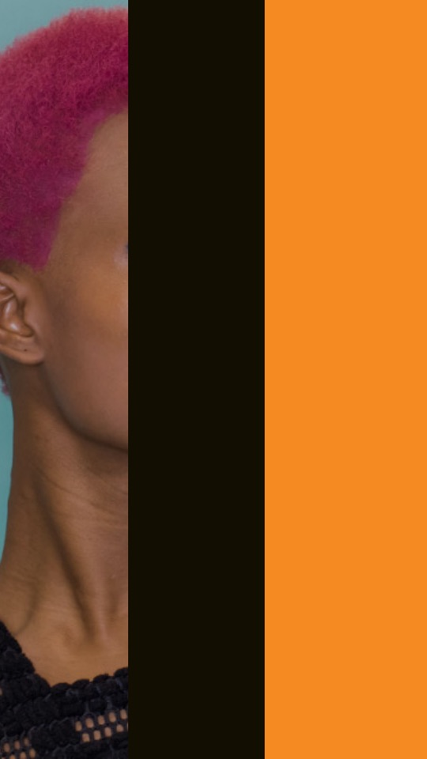
SwatchWipe
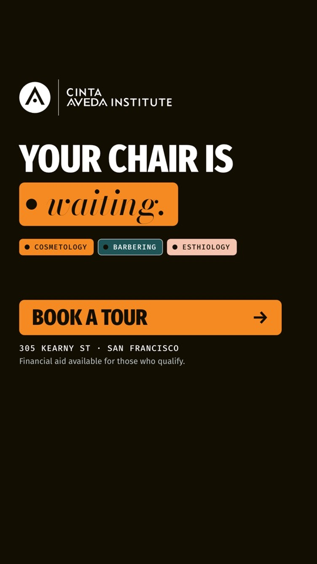
EndCard
04 · The slate
Seven videos, one style.
All 9:16, built for TikTok and Reels first. Each one takes two or three moves from the reference and puts them on something only Cinta has. Hooks come from the kit's hook bank or the same voice. Every spoken word is a real student or instructor; the beat sheets give the prompt to ask, not a script to read.
Preview · The round 4 hero, 48 s, cut from the relit scenes and two new samples.
1 · Hero · 45 s, cut to 15
Why pay for school?
I already know how. Why pay for school?
The objection you named as the priority. Tutorials fly away, the mannequin becomes a guest, 1,000 hours stack into a wall, classmates multiply along the brick. Storyboarded below.
AwayStackingRightLook inside
Preview · Hook on a shaving mannequin, clock hours on petal paper, the ruler from day one to state boards, light EndCard. 19 s.
2 · Explainer · 30 s
1,000 hours, then state boards
1,000 hours. Then state boards.
Documents as data: timecards stack into one column per program, Cosmetology and Barbering to 1,000, Esthiology to 600. Then a dot walks right along a ruler from week one to state boards.
Documents as dataTimelineStacking
Preview · Hook at the Kearny St window, the front desk inside a 1942 salon, then the camera travels left to 1949, 1942 and 1920. 19 s.
3 · Story · 35 s
Beauty school, then and now
A DAY AT 305 KEARNY st.
The camera travels left into history: Kearny Street in 1866, the Palmer House barbershop in 1887, a New York salon in 1942, the Madam C. J. Walker Beauty School in 1949. Then it travels right, through a door, into today's floor in color.
Left and rightSetting cardBlack and white
Preview · Hook on a kit unboxing, then the mannequin, shears and makeup as torn paper prints with arrows and labels. The mannequin-name answer still needs filming. 12 s.
4 · List · 20 s
What's in the kit
THINGS NOBODY TELLS YOU ABOUT the kit.
A student opens the “box of boxes.” Shears, clippers, brushes and the mannequin multiply into rows, three get hand-drawn arrows and paper labels, and the camera cuts close on each one.
MultiplyingArrows and labelsCloser
Preview · Cosmetology in 15: hook, learning, practicing, on the floor, the floor in strips, the big chop reveal. Runs 23 s here; the ad trims each part.
5 · Program in 15 · 3 × 15 s
Program in 15, collage cut
BARBERING IN 15 seconds.
The kit's recipe D with one collage beat each. Layers assemble in the program color: foils for Cosmetology, a striped barber pole strip for Barbering, botanical paper for Esthiology. The FactCard lands on the finished board.
CosmetologyBarberingEsthiologyLayers
Preview · The paper map with ribbons and Cinta's pin, then a 1949 doorway opening on today's floor, then the EndCard. The calendar card is still to build. 14 s.
6 · Tour invite · 15 s
Come see the floor
COME SEE the floor.
The swatch card's ring hole opens like an iris on the door at 305 Kearny. A paper map assembles and ribbons name the street and Union Square, blocks away. A calendar card slides right to the next Tuesday tour.
Look insideRibbonsRight
Preview · The certificate presented in the staff's own words, Wendy's student card with her three words as pills, then Wendy in her own words. The gong comes from your graduation footage. 16 s.
7 · Graduate · 30 s
Wendy's 600 hours
600 HOURS. THEN the gong.
Built on the released graduation footage you already have. Her SwatchTag slides in, her hours walk right along a ruler, and the real gong strike lands on the cut to the ceremony. Proof in hand: her certificate, held.
ID cardTimelineProof in hand
05 · Hero storyboard
Why pay for school?
Six frames from the current hero: Cinta’s own people and objects on bright paper, every line of text to the rules.
Three program objects on bursts; the line “three crafts.” on the pull-back.
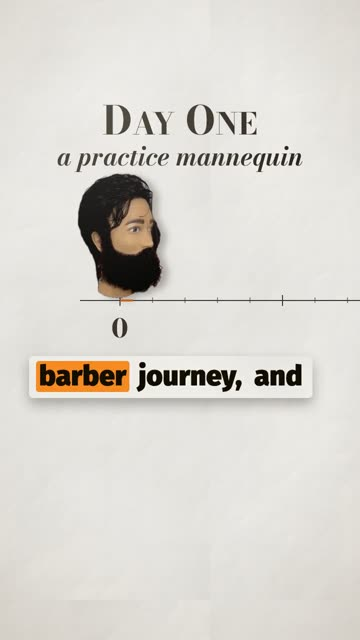
0:11 · Right
Her mannequin on day one, on a ruler of clock hours, her own words in the caption.
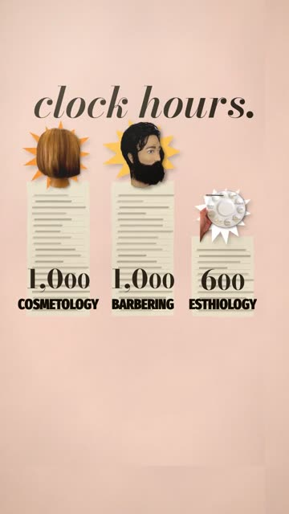
0:21 · Documents
1,000, 1,000 and 600 clock hours on petal paper.
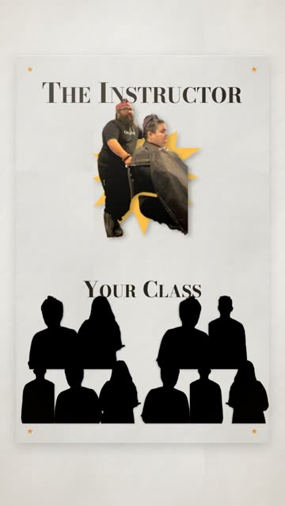
0:27 · Multiplying
The instructor, then your class as silhouettes.
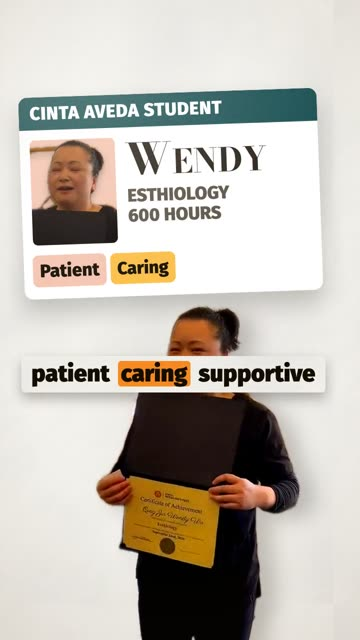
0:38 · ID card
Wendy's student card, her three words as pills.
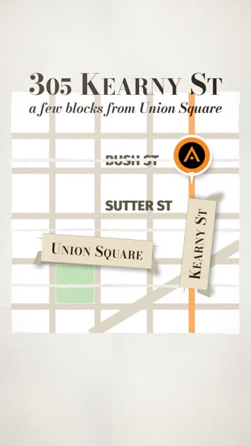
0:44 · Map and pin
305 Kearny St, a few blocks from Union Square.
The beat sheet it follows
TimePicture and wordsMove and meaningSound
0:00
Student at the chair, mid-cut, looks up. HookTitle: I ALREADY KNOW HOW. WHY PAY FOR school? Captions start on the first word.
Straight cut
Frame 1 moves. Brand layer only.
Shears close to the mic. Music enters under the second line.
0:03
Prompt: “What did you learn from tutorials before you came here?” Picture up at the start of the clause: a phone-shaped stack of tutorial cards, plain paper with a play mark, never real creators' thumbnails.
Multiply, then away
Cards multiply on twos as they talk, then shrink 15 percent and fly off on the word that dismisses them.
Paper flaps, then one air sound falling as they leave.
0:09
Prompt: “What was your first week like?” The mannequin head from week one, cut out on light paper, with a label strip: WEEK 1. A hand-drawn arrow to the right.
Right
The camera travels right, punch then glide, to a real guest in the chair: YOUR FIRST GUEST.
Cape-swish travel, panned left to right.
0:16
Timecards stack while they say how many hours they have done. FactCard after the stack: 1,000 CLOCK HOURS, in the program color.
Documents as data
One card per drawing, then faster. Count ends exactly on 1,000.
A timecard punch on each card, a heavier punch on 1,000.
0:22
Proof in hand: their real clock-hour log or practical checklist, held in their own hands, names and IDs covered.
Closer
The paper lifts toward camera; the floor behind goes soft.
Paper lift.
0:26
Prompt: “Who do you learn next to?” One student on the brick wall, then the class beside them, each cut from their own released clip. SwatchTag on the speaker.
Stacking
Classmates appear one per drawing: more people means more power, the reference's soldiers at 5:52.
Soft pin sounds as each one lands.
0:32
Instructor over the shoulder. Three labels with arrows land on the frame: INSTRUCTOR, GUEST, YOU.
Arrows and labels
The reference's triptych at 1:44, done on footage.
One marker stroke per arrow.
0:36
Look inside: an orange swatch card fills the frame, its ring hole opens onto the floor at 305 Kearny.
Iris
Ten drawings, one second. The hole is the brand device.
Music drops out 0.4 s before the open.
0:41
SwatchWipe to the EndCard. YOUR CHAIR IS waiting. CTA: Book a tour. Financial aid available for those who qualify.
SwatchWipe
The one designed transition.
Music resolves; last words dry.
15 s cutdown: 0:00 hook, 0:03 tutorials away, 0:16 timecards to 1,000, 0:36 iris, EndCard. Export two more hooks over the same body, as the kit's testing rule asks.
06 · The other six
Beat sheets.
2 · 1,000 hours, then state boards 30 s · teal
0:00
Student practicing a fade, looks up. HookTitle: 1,000 HOURS. THEN state boards.
Straight cut
Clippers.
0:03
Three columns of timecards build on fog paper, one per program, with a paper label under each: COSMETOLOGY, BARBERING, ESTHIOLOGY. They stop at 1,000, 1,000 and 600, the approved hours.
Documents as data
The reference's sheets rearranging into a stepped chart at 0:10.
Punch per card, three heavier punches.
0:10
A ruler line across a long strip of paper. Ticks typed as labels: WEEK 1, MANNEQUIN, ON THE FLOOR, STATE BOARDS. A dot walks right.
Right
Forward in time. Each label lands as the student names that stage.
Travel air, left to right.
0:20
Prompt: “How are you getting ready for state boards?” Flashcards from their own study deck, held and fanned.
Proof in hand
Card riffle.
0:27
SwatchWipe to the EndCard.
SwatchWipe
3 · Beauty school, then and now 35 s · black and white into color
0:00
Walking in at 305 Kearny, gimbal. HookTitle: A DAY AT 305 KEARNY st.
Straight cut
Street sound.
0:03
Setting card types its fields as whole lines on paper over an archive photo: ERA 1866 · PLACE KEARNY ST, SAN FRANCISCO · from the photo's record.
Left
The camera travels left, back in time, along a paper timeline.
Travel air, right to left; music low-passed like a memory.
0:08
Four stops, black and white: Green Street west from Kearny (1866), the Palmer House barbershop (1887), dyeing hair at Francois de Paris in New York (1942), the Madam C. J. Walker Beauty School in Washington, D.C. (1949). A typed credit on each.
Layers
Each photo cut into three close layers with a gentle glide, the reference's diorama.
Pin on each credit.
0:22
Through a 1942 salon doorway into now. The floor at 305 Kearny, in color, students at work.
Right
The dot walks right to NOW. Then in black and white, now in color, as the reference does at 4:30.
The filter opens back up on a downbeat.
0:30
Student to camera, one sentence about learning the craft today. Then the EndCard: START ON Kearny St.
SwatchWipe
4 · What's in the kit 20 s · list format
0:00
Box lid lifts, top-down. HookTitle: THINGS NOBODY TELLS YOU ABOUT the kit.
Straight cut
Cardboard.
0:02
Everything in the box, cut out and laid on fog paper, multiplies into tidy rows, one item per drawing.
Multiplying
Small knocks on twos.
0:06
Three things get arrows and labels as the student names them, the camera cutting close on each: SHEARS, CLIPPERS, MANNEQUIN. The ListStep counter (marigold) goes 01, 02, 03.
Arrows and labelsCloser
Marker stroke per arrow; snip, buzz, a soft thud.
0:15
Prompt: “What did you name your mannequin?” Their answer, to camera.
Footage
0:17
SwatchWipe to the EndCard.
SwatchWipe
5 · Program in 15, collage cut 3 × 15 s · program colors
0:00
The program's signature action. HookTitle: COSMETOLOGY / BARBERING / ESTHIOLOGY IN 15 seconds.
Straight cut
0:02
Learning, practicing, on the floor: three footage scenes, about 2 s each, as in the kit's recipe D.
Footage
0:08
One collage beat. Strips slide in one after another until a board is whole: folded foils on orange for Cosmetology, a strip cut from an archive barber pole on teal for Barbering, pressed botanical paper on petal for Esthiology. The FactCard lands on it.
Layers assembling
The reference's strata at 2:23.
Foil crinkle, cape snap or a soft paper slide, per program.
0:12
Student smiling at their station, then the EndCard with only that program's chip.
SwatchWipe
6 · Come see the floor 15 s · retargeting
0:00
An orange swatch card fills the frame. HookTitle: COME SEE the floor.
Look inside
The ring hole opens onto the entrance at 305 Kearny.
One push of air.
0:02
One continuous walk in, entrance to stations to the product wall. Captions: “this is where you'd start.”
Footage
0:07
A paper street map assembles in strips. Ribbons with cut ends name KEARNY ST and UNION SQUARE, a few blocks away, as the site says.
Ribbons
Strip slides.
0:10
A calendar card slides right to the next tour. Day and time only once Cinta confirms them (Instagram says Tuesdays at 3:00 PM).
Right
Slide.
0:12
SwatchWipe to the EndCard, CTA Book a tour.
SwatchWipe
7 · Wendy's 600 hours 30 s · built on the released graduation footage
0:00
Cold open on the real gong strike (source 79.6 s in IMG_2794), then Wendy to camera. HookTitle: 600 HOURS. THEN the gong.
Straight cut
The gong itself, no added hit.
0:03
SwatchTag in petal: Wendy, Esthiology graduate. It slides in from the left and sits clear of her face.
ID card
0:06
Her own words about the program, word for word. A ruler runs under them from DAY 1 to 600 HOURS while a dot walks right.
Right
Travel air.
0:18
Proof in hand: her certificate held, if she agrees to film it. QuoteCard on bay teal with one line she said.
Closer
Paper lift.
0:26
SwatchWipe to the EndCard, Esthiology chip only.
SwatchWipe
07 · Movement with meaning
Every direction means something.
The reference's core lesson, with the Cinta moment each direction belongs to. Picture up at the start of the clause; the key move on the action word.
Closermeans importantThe student's own work comes forward: the finished fade, the clock-hour log in their hands. Everything else softens.
Awaymeans less relevantTutorial cards, “I'll figure it out myself,” the guesswork. They shrink, tilt slightly and leave the page.
Stackingmeans growthTimecards to 1,000 hours, classmates along the brick wall, tools in the kit multiplying into rows.
Rightmeans forwardMannequin to first guest, week one to state boards, then to now on Kearny St.
Leftmeans back in timeInto salon and barbershop history: 1866, 1887, 1942, 1949. Always in black and white.
Closer means importantCloser
The camera pushes in on each program object as its name types on, then pulls back to all three.
Round 6 · to the text rules
Away means less relevantAway
Plain paper tutorial cards multiply, then shrink and fly off the page.
Round 6 · to the text rules
Stacking means growthStacking
Three sheets rise as bars to 1,000, 1,000 and 600 clock hours.
Round 6 · to the text rules
Right means forwardRight
Day one on a mannequin, then her first guest, then state boards, along a ruler of clock hours.
Round 6 · to the text rules
Left means back in timeLeft
The camera travels left along a ruler from Cinta today to 1949, 1942 and 1920, the orange line trailing back to now.
Round 6 · to the text rules
08 · Transitions
Eight moves, made in the salon.
The eight transitions we built for Kamino Real, each swapped for a material from the floor. Drawings are at 10 a second. In ads under 20 seconds only SwatchWipe is used; the rest are for longer pieces, two at most.
Reference move
Cinta version
What happens
Length
Use for
Preview
Swatch wipe
SwatchWipe
The kit's own move: the orange swatch wipes left to right, the Bodoni phrase rises 6 frames later.
The kit bans zoom blurs. Use a straight cut on the sentence instead, which is what the reference does most.
—
—
—
Each one, playing
SwatchWipe12 frames
The orange swatch wipes across with a fog trailing band, and the light EndCard settles.
Round 6 · to the text rules
Ring hole iris10 drawings
The swatch card's punched hole opens on the floor at 305 Kearny, then the EndCard.
Round 6 · to the text rules
Color lift6 drawings
A pale erosion from the centre lifts the before away, like bleach lifting colour; the after is underneath.
Round 6 · to the text rules
Foil fold6 drawings
A sheet of foil folds back from the corner to show the floor under the day's schedule.
Round 6 · to the text rules
Cape swing6 drawings
A black cutting cape swings past the lens and the scene has changed.
Round 6 · to the text rules
Foil strips6 drawings
Folded foils sweep across like sectioning and carry the old step off.
Round 6 · to the text rules
Torn card8 drawings
A consultation card tears from the right edge with a fibre rim.
Round 6 · to the text rules
Ring light5 drawings
The station mirror light blooms warm white for two drawings, then the reveal settles.
Round 6 · to the text rules
09 · From the reference
Scene types, for Cinta.
Each scene type twice: on the left, the preview built from Cinta's reels (tap to jump to the clip); on the right, the frame from the reference. Between ideas the reference cuts back to the host on camera; Cinta cuts back to the floor.
The before page burns away from the centre to the after: the big chop. j10
All 38 contact sheets and 25 frame-by-frame close ups are in the studio's full reference study; the study applies here unchanged.
10 · Sound
The salon is the sound library.
For Kamino Real every move got a paper sound. Here the floor already makes better ones: shears, clippers, foils, capes, spray bottles. Record them at 305 Kearny and they become the brand's sound, heard nowhere else. Until then, the Kamino paper sounds stand in; play them below. The previews use the same stand-ins at these levels, the reels' own voices where someone speaks, and nothing from the licensed songs some reels carry. Every preview is mastered to minus 14 LUFS.
Move
Salon sound to record
Stand-in now
Level
Drop (a card lands)
A consultation card dropped on the station counter
−22 dB
Punch (the key word, a count ending)
A timecard punch or a swatch-ring hole punch
−16 dB
Count (each card or number)
A comb set down on glass
−32 dB
Pop (small labels)
One clean snip of shears
−25 dB
Pin (classmates, credits)
A sectioning clip snapping shut
−24 dB
Cape swing
A cutting cape snapped open
−18 dB
Foil fold, foil strips
Foil folded and pulled from the box
−19 dB
Color lift
A soft spray-bottle mist, short
−19 dB
Torn card
A consultation card torn slowly
−17 dB
Travel (camera moves)
A blow dryer passing on low, near to far
−24 dB
Away
The same dryer pass, falling in pitch
−25 dB
Slide
A towel or card slid across the counter
−24 dB
Marker (arrows)
A grease pencil on a mirror
−32 dB
Ring light
The station light switching on, with a soft swell
−22 dB
One sound per meaningful move
Never one per word, never one on a straight cut. Each hit lands on the first frame of the drawing where the piece touches the page.
Music
From TikTok's Commercial Music Library or Meta's Sound Collection, as the kit requires for ads. Ducked about 18 dB under speech (the kit's level; Kamino settled on 33, so try both on a phone). It drops out 0.4 seconds before the reveal and comes back on the EndCard.
Memory sounds different
In video 3 the music is low-passed while the camera is in history and opens again when it comes back to now.
Master
Minus 14 LUFS integrated, true peak at minus 1.5 dB or lower, checked on the exported file. Effects dip 3.5 dB under voices. Stereo follows the picture and stays full in mono for phone speakers.
Recording session
One hour at 305 Kearny with the floor quiet: phone or small recorder, 48 kHz, 24 bit, 15 to 30 cm from the source, five takes of each sound above, plus 30 seconds of room tone with nobody moving.
Footage library
Every reel on the grid.
All 48 reels on Cinta's Instagram grid as of October 30, 2026: Cinta's own posts and student posts co-published with @cintaaveda. Each card says what is in it, which moves it suits, whether it has usable speech, and whether captions are burned into the picture (most student posts have them, so plan a crop). The orange tags link to the previews built from it. The files and word-timed transcripts are in the project folder for editors.
Instructor and student applying color, brick wall; "the best time to plant a tree is 20 years ago."
Moves: Hook, collage in footage
Sound: Voice · Screen: Question caption in the middle
@cintaaveda2026-08-22 · 25 s
Wide shots of the full floor, many students at work.
Moves: The floor, iris reveal
Sound: Voice-over · Screen: Captions top and bottom
@cintaaveda2026-09-25 · 21 s
Tour promo: barber, facial, the storefront at Kearny St.
Moves: Come see the floor
Sound: Voice-over · Screen: Word captions; talks about earning, avoid in ads
@aubsessionstudio2026-09-03 · 41 s
Men's perm: before at the Aveda backdrop, rods, the finished curls.
Moves: Before and after
Sound: Licensed track · Screen: Clean
@beezhairco2026-09-02 · 39 s
Shampoo and blow dry; split platinum and black reveal at the backdrop.
Moves: Reveal, ring light
Sound: Licensed track · Screen: Clean
@cortes.bellas2026-10-02 · 12 s
Pin curls in a brick pattern, then the plum curls.
Moves: Before and after
Sound: Licensed track · Screen: Caption in the middle
@cortes.bellas2026-09-30 · 19 s
Redoing mannequin Natasha's hair: blow dry and shape.
Moves: Mannequin, week one
Sound: Licensed track · Screen: Caption at the bottom
@cortes.bellas2026-10-01 · 17 s
"One must assume the proper stance to perform a straight cut": a student squats at the mannequin.
Moves: Arrows and labels, humour
Sound: Licensed track · Screen: Caption in the middle
@cortes.bellas2026-10-03 · 15 s
A chic lob on a mannequin, then a selfie with the instructor.
Moves: Mannequin to approval
Sound: Licensed track · Screen: Caption in the middle
@cintaaveda2026-10-01 · 6 s
Esthetics student with a hand mirror on the treatment bed, then laughing.
Moves: Student POV
Sound: Room sound · Screen: Clean
@sindy_teeth_lash_brow2026-09-11 · 26 s
Lash lift close-ups.
Moves: Esthiology detail, closer
Sound: Room sound · Screen: Small caption
@sindy_teeth_lash_brow2026-08-27 · 31 s
Lash lift in SF: shields, tint, the finished lashes.
Moves: Esthiology detail
Sound: Room sound · Screen: Small caption at the top
@sindy_teeth_lash_brow2026-08-29 · 41 s
Facial with masks and massage, letterboxed.
Moves: Esthiology
Sound: Voice · Screen: Letterboxed, captions
@summerskincareesthetics2026-09-13 · 31 s
Day 54: huddle and wellness, "I passed!" on the exam screen, "they interviewed me!"
Moves: Proof in hand, rack focus
Sound: Licensed track · Screen: Captions
@sindy_teeth_lash_brow2026-09-14 · 16 s
Last day of school: the class dances on the floor.
Moves: Multiplying, community
Sound: Room sound · Screen: Caption at the bottom
@summerskincareesthetics2026-09-14 · 44 s
Day 55: back-to-back facials and a classmate's graduation at the gong.
Moves: Graduate story
Sound: Licensed track · Screen: Captions
@summerskincareesthetics2026-09-18 · 73 s
Unboxing the MUD makeup kit at a desk, class behind.
Moves: What's in the kit
Sound: Room sound · Screen: Clean
@summerskincareesthetics2026-09-19 · 32 s
Day 57: MUD makeup course, last-minute studying, "I passed!", the color wheel.
Moves: Documents, proof
Sound: Licensed track · Screen: Captions
@summerskincareesthetics2026-09-21 · 23 s
Day 58: graduation, "600 hours completed!", the certificate at the gong.
Moves: Graduate story, timeline
Sound: Licensed track · Screen: Captions
@summerskincareesthetics2026-09-21 · 86 s
Getting her hair styled at the Cinta salon: shampoo, styling, mirror.
Moves: Salon guest POV
Sound: Licensed track · Screen: Clean
@summerskincareesthetics2026-09-06 · 35 s
Day 52 as spa manager: keypad door, cleaning tools, resetting beds.
Moves: Come see the floor, iris on the door
Sound: Licensed track · Screen: Captions in the middle
@summerskincareesthetics2026-08-14 · 46 s
Day 41: whiteboard schedule, "I passed!", facials, being a lash lift model.
Moves: Documents, proof
Sound: Licensed track · Screen: Captions
@summerskincareesthetics2026-08-16 · 36 s
Day 43: whiteboard schedule, plant peels, waxing.
Moves: Esthiology detail
Sound: Room sound · Screen: Captions
@summerskincareesthetics2026-08-28 · 46 s
Day 47: whiteboard, "I passed!", skin spatula demo, extractions.
Moves: Proof in hand
Sound: Licensed track · Screen: Captions
@aubsessionstudio2026-10-09 · 12 s
Lash lift and brow work; certificates from another academy.
Moves: Skip: credits another school
Sound: Licensed track · Screen: Clean
@aubsessionstudio2026-10-15 · 8 s
A product unboxing from another brand.
Moves: Skip: another brand
Sound: Licensed track · Screen: Clean
@sierra.styles.nikki2026-10-27 · 40 s
A day as a cosmetology student who commutes: BART 7 to 8 AM, prepping mannequins, practicing a layered cut 2 to 4 PM, BART home 5:30.
Moves: Timeline through a day, right means forward
Sound: Licensed track · Screen: Captions with times
11 · Images
What to collect.
Shoot on the floorStudents for cutouts
To camera against the brick wall, space around them, hands in frame
Standing, pointing left and right, holding the kit, holding a mannequin
Every person released before their face appears, as the kit requires
Shoot, top-downProof in hand
A real clock-hour log or timecard, practical checklist, state board flashcards
The kit box opened, every item laid out on a plain surface
Personal details and IDs covered before filming
Scan at 600 dpiSalon paper and textures
Hair color swatch cards with the ring hole, foils flat and folded, end papers
Consultation cards and appointment cards, blank
The brick wall and a mirror, shot straight on in even light
CaptureProof on screen
Students' own #avedacreator posts, with each student's permission
The street map around 305 Kearny for the tour piece
Keep the date of every capture
Archive board: beauty and barbering history
53 photographs and prints from the Library of Congress, each record read on October 30, 2026. Three are already in the previews. The thumbnails link to the item pages, where the full-size files are.
San Francisco and Kearny Street 7
For the then of 305 Kearny St, the tour piece and the street map.
Real people in archive photos are history and atmosphere only, never a student, a graduate or a testimonial. Every archive piece on screen carries a typed credit with the year and photographer from its record. Name files by video, source and date, for example CINTA_V3_loc-francois-de-paris_1942_01.jpg, and keep one sheet with the source and rights line of each.
12 · How to build it
Our recipe.
The settings behind every piece. One drawing is 3 frames at 30 fps, a tenth of a second.
Frame rate
Master 1080 × 1920 at 30 fps. Footage plays at full rate. Collage pieces change every 3 frames; in After Effects, Posterize Time at 10 on the collage layers only. Brand templates stay smooth at 30. Every cue rounds to its nearest drawing.
Drop
A card falls in over 4 drawings: about 170 px above, 14 px past, 4 px back, at rest. Scale 1.10, 0.99, 1.004, 1. The shadow starts high and lands flat.
Pop
Labels and small pieces: scale 0.35, 1.12, 0.97, 1 over 4 drawings with a small tilt on the first two.
Away
Over 4 drawings: travel off the page, rotate 12 degrees or less, shrink 15 percent.
Camera
A slow push of 2 to 3 percent across each board. Travels along a timeline use punch then glide: most of the distance in the first few drawings, then a long settle.
Depth
Three close layers: far at 0.75 of the camera, middle at 0.88, near at 1. One small foreground piece, a comb or a foil, may pass at 1.15.
Students
Cut cleanly out of their own footage with a person matte. A 6 px white rough-edged border and a soft shadow; white is the kit's tag-card color. Left and right frame edges fade so a hand leaves softly.
Paper
Grounds in fog, petal, bay teal and espresso from real scans. Orange only as the swatch, kept to a tenth of the frame. A moving grain at 8 percent over the collage layer, never over the brand layer.
Labels
Fira Mono 500 caps on a white paper strip, at least 28 px on the 1080 canvas. Land whole with a pop, one per object, never repeating the hook. Ribbons with cut ends for places; tags on a string for a number on a thing.
Arrows
Hand drawn, espresso on paper and white on footage, drawing on over 3 drawings with a hand-cut edge.
Type
Kit only: Fira Sans Extra Condensed 800 for hooks and numbers, Fira Sans 800 for captions, one Bodoni Moda Italic phrase per screen, Fira Mono for labels and credits. Everything inside the safe box, x 65 to 960, y 270 to 1248.
Claims
Only the approved facts: program names, 1,000 / 1,000 / 600 clock hours, 305 Kearny St, “Financial aid available for those who qualify.” No jobs, money, rankings, pass rates, accreditation or “guaranteed.” Tuition and start dates stay on the landing page. Every number on screen carries its source line.
Timing
Picture up at the start of the clause, the key move on the action word. In the first 6 seconds, change the picture every 1.5 to 2.5 seconds, as the kit asks.
13 · Next
Decisions, then a first round.
Decision 1Collage on threes at 30 fps
Recommended: keep the kit's 30 fps and step the collage layer at 10 drawings a second. The alternative is mastering these pieces at 24 to get the reference's exact 12, which breaks the kit's frame timings.
Decision 2Labels land whole
Recommended: keep the kit's no-typing rule for every label. Test one exception, the student's name on the SwatchTag typing on, and drop it if it feels off-brand.
Decision 3Transitions in longer pieces
Recommended: ads keep SwatchWipe only. Pieces over 30 seconds (the hero, video 3, Wendy) may use two more from the salon set.
Decision 4The Instagram bio
It says “Bay Area's Top 10 Beauty School” and links to cintaaveda.com. The kit keeps rankings out of every video and caption, so the videos will not echo it; worth fixing the bio and the link while the new videos go up.
Where it stands
Step
What
Status
1
Sixteen previews from Cinta's own reels: every scene type in the plan, all eight salon transitions (push blur dropped), SwatchWipe and EndCard
Done
2
Footage library: all 48 reels pulled, transcribed with word timings, and tagged by move
Done
3
Archive board: 53 photos with rights checked; three used in previews
Done
4
Your four decisions, and a listen on a phone
Yours
5
Torn card, foil strips and ring light previews, and the 45 second hero cut end to end
Done
6
Floor shoot and sound session: clean footage without burned-in captions, proof in hand, the 14 salon sounds
Needs a date with Cinta
Archive
Earlier rounds, superseded.
Superseded. These clips predate the text rules and the bright look. Keep them for the history; do not copy them. The reference is everything above.
Superseded. These clips predate the text rules and the bright look. Keep them for the history; do not copy them. The reference is everything above.
Round 3 · kept for comparison
Closer to the reference.
You said round 2 was nowhere near the reference, and you were right. I watched the video again, all of it in contact sheets and the key moments at full resolution, and put my clips beside it. Mine were footage with stickers and boards of thumbnails; the reference builds one world per shot. These ten scenes are rebuilt from scratch on the reference's own techniques, still from Cinta's reels and in Cinta's colours, and the hero is re-cut from them.
Show round 3: hero, ten scenes, the voice-over script and the scratch read
0:00Hook. A real cut finishing: I ALREADY KNOW HOW. WHY PAY FOR school?
0:09Mannequin, floor, state boards. Her voice over a timeline of clock hours.
0:17Clock hours. Documents as data on felt.
0:22Who you learn with. Instructor and silhouettes.
0:28A beautiful day at Cinta Aveda. The front desk, 1942 to today.
0:35Wendy. 600 hours, typed on paper.
0:38Inside a beauty school. The iris opens on today.
0:44Book a tour. SwatchWipe and EndCard.
Reference beside Cinta, scene by scene
Three programsBurst triptych · brush arrows · typed small caps
Three real objects lifted out of Cinta's reels, each on a boiling burst in its program colour: a bob from a cosmetology mannequin, a bearded barbering mannequin, and the day's facial products. A brush arrow draws down onto each as the camera pushes in, the name types on in serif small caps, then the camera pulls back to all three.
Reference 1:44 on the left · Cinta's version on the right
Mannequin, floor, state boardsTimeline · figures on a ruler
The ruler is clock hours, 0 to 1,000. Her own words play (“this was my first practice cut”): day one is her barbering mannequin standing on the line; the orange line grows right as the camera travels to her first men's cut, a real guest standing on the ruler with his shadow on the paper; the camera pulls back to “then state boards.”
Reference 0:41 on the left · Cinta's version on the right
Clock hoursDocuments as data, on felt
The reference's “We the People” chart on Cinta's bay-teal felt: three paper sheets rise as bars to the approved hours, 1,000, 1,000 and 600, each topped by that program's object on a burst, a script title above and the numbers set in serif below.
Reference 0:13 on the left · Cinta's version on the right
Who you learn withDiagram on a card · silhouettes multiply
A paper card with star corners, like “The President / Electors.” The instructor at the chair in colour under a burst, then people from Cinta's own reels as black silhouettes, two facing in from each side, multiplying into ranks one every two drawings.
Reference 0:27 on the left · Cinta's version on the right
A beautiful day at Cinta AvedaPresenter inside another era · brushed reveal
The front desk cut out of her own reel and set inside a 1942 New York salon reception, era title typed in serif, while she answers “It's a beautiful day at Cinta Aveda.” A dry-brush edge paints the world over to Cinta's floor today as she books the guest.
Reference 1:38 on the left · Cinta's version on the right
WendyFigure on paper · typed name
Like George Washington: Wendy cut tight from her graduation reel, holding her certificate, standing on crumpled paper with her shadow on the wall behind. Her name types on in serif small caps over “Thank you for you guys, patient, caring.” The figure is tracked frame by frame so the handheld shot holds still.
Reference 0:42 on the left · Cinta's version on the right
A nurse, then beautyCollage inside the footage
Real prints sit in her own room, graded to its light and a little soft, at their own depth: on “nurse” a 1920 Red Cross class where caring for a patient's hair is part of nursing drops onto the shelf beside her; on “what do I really want to do” it flies off and a 1942 salon takes its place.
Reference 1:20 on the left · Cinta's version on the right
The floorLayers assembling
Cinta's own floor cut into four torn strips that slide in from alternating sides onto parchment until the room is whole; then the three programs pop in front on their bursts and the camera pushes in on the typed title.
Reference 2:23 on the left · Cinta's version on the right
Before, afterBurn reveal
The big chop, both halves cut out on crumpled paper with her shadow: the before page burns away from the centre with a pale rim, no char, and the after is underneath, typed on in serif.
Reference 6:14 on the left · Cinta's version on the right
Inside a beauty schoolOld print · iris vignette
A 1949 beauty-school storefront in a rounded black-and-white print. A dark round vignette closes on the doorway, then opens on what is inside a beauty school today, Cinta's students coming down the hall in colour, until it fills the frame.
Reference 5:21 on the left · Cinta's version on the right
What changed, and why
Quality
The reference
Round 2
Round 3
One world per shot
Every collage shot is a complete picture: a room, a street, a sheet of paper, one subject.
Footage with stickers on top, or flat boards of small thumbnails that read like an app screen.
Each scene is one composed world with one sharp subject.
Subjects cut tight and grounded
Figures and objects are cut out and stand in the scene with a soft cast shadow from one light.
Prints with white sticker borders and no shadow; people only in a few clips.
People and objects lifted out of Cinta's reels with Apple's subject lift, tight edges, a shadow on the paper behind.
Real paper and a lens
Crumpled paper, parchment, felt; vignette, grain, shallow depth of field, a camera that never sits still.
Rendered crumpled paper, parchment and felt grounds, vignette, grain, out-of-focus backgrounds, a slow push or travel in every shot.
Serif type, typed on
Titles and labels in classic serif small caps that type on letter by letter; script for a heading.
Condensed sans hooks and mono labels: a social template.
Bodoni small caps typed two letters a drawing, Bodoni italic for script headings. The kit's hook, captions and end card stay for the ad layer.
Emphasis with bursts and arrows
A boiling burst behind the object that matters; a red brush arrow draws onto it.
Thin arrows; no bursts.
Bursts in the program colours that boil; thick orange brush arrows.
Captions stay quiet
No captions; the picture carries the idea.
Big orange-chip captions on every clip dominated the frame.
Smaller captions, only where someone speaks, dark on paper and white on footage.
Voice-over script for the hero
The reference never runs without a voice and a music bed, and Cinta's reels only have voice in pieces. This script fills the gaps between the real lines in about 60 words, using only the approved facts. One student reads it: to camera for the first line, voice-over after that. Record on a phone in a quiet room, three takes. Music: one instrumental bed from TikTok's Commercial Music Library under the voice, out before the last line.
Time
Picture
Line
Voice
0:00
Hook: a real cut finishing
“I already know how. Why would I pay for school?”
A student to camera, half joking
0:02
Three programs
“A video can't hand you a guest. Pick your craft: Cosmetology, Barbering or Esthiology.”
Same student, voice-over
0:09
Mannequin, floor, state boards
Her own words stay: “This was my first practice cut … Looking good.”
Real audio, no voice-over
0:17
Clock hours
“Cosmetology and Barbering: 1,000 clock hours. Esthiology: 600. Hands-on, at the chair.”
Voice-over
0:23
Who you learn with
“Next to instructors, and a class going through it with you.”
Voice-over
0:28
The front desk
Her own words stay: “It's a beautiful day at Cinta Aveda … for October the 29th at 1 o'clock.”
Real audio
0:35
Wendy
Her own words stay: “Thank you for you guys, patient, caring.”
Real audio
0:38
Inside a beauty school
“Come see the floor. 305 Kearny Street, downtown San Francisco.”
Voice-over
0:44
EndCard
“Your chair is waiting.”
Voice-over, dry, no music under it
The script read against the cut
A computer voice reading the script at the times above, so you can hear the pacing before a student records it. It is a timing guide only, labelled on screen, and not for posting. Reading it against the cut showed two lines were too long for their scenes; both are trimmed in the table above, and every line now ends before a student's own voice starts. No music yet: the bed comes from TikTok's Commercial Music Library when the real voice is in.
0:00To camera. The hook line, 2.7 seconds.
0:03Voice-over. Guest line, then the three crafts as their names type on. Ends at 0:08.
0:09Her own voice. First practice cut, “Looking good.”
0:17Voice-over. Clock hours, read a little quicker to finish by 0:23.
0:23Voice-over. Instructors and the class.
0:28Their own voices. The front desk, then Wendy.
0:38Voice-over. The address, over the iris.
0:43Voice-over. “Your chair is waiting.” Dry.
Superseded. These clips predate the text rules and the bright look. Keep them for the history; do not copy them. The reference is everything above.
Round 2 previews · superseded by round 3 above
Round 2, for comparison.
Replaced by round 3 above, kept for comparison. Sixteen 9:16 clips, each built on footage from Cinta's Instagram grid: Cinta's own posts and student posts co-published with @cintaaveda. Where someone speaks, it is their real voice and their words, timed word by word. Where the reel carries a licensed song, the song is muted and only paper sounds play. The brand layer (hook, captions, swatch tag, FactCard, SwatchWipe, EndCard) moves smoothly at 30 fps; the collage moves on threes, ten drawings a second. Tap a clip for sound.
Show the 16 round 2 clips
40 years a nurseHook · captions · swatch tag
The brand layer on real footage. Her own words become the hook and the word-by-word captions with the orange active chip; the SwatchTag slides in after the hook leaves; one marigold tag on a string swings in on “40,” the only collage piece, on threes. Two takes from the interview joined with a jump cut, as the kit allows.
Dd9UaE3R0sD · @cintaaveda · Oct 1
Her name is SamanthaLabels and arrows in the footage
Collage inside the footage, the reference at 1:20 and 1:44. A paper label lands on the student, a ribbon names the mannequin on “named,” and a hand-drawn arrow draws to her on “Samantha.” Real interview audio, real captions.
Dd98F_dS7KF · @cintaaveda · Oct 1
Mannequin, then a guestRight means forward
One student, two posts a day apart. Her first practice cut on a barbering mannequin plays inside a print on teal (Barbering's colour); she says “this was my first practice cut,” the arrow draws, and the camera travels right along the ruler to her first men's cut on a real guest as she says “Looking good.”
DeYDpYRhNlb + DecgnnAB6gW · @aubsessionstudio with cintaaveda · Oct 12–13
Who you learn withMultiplying
Stacking means more. Nine real clips from Cinta's grid land one every two drawings, centre first, while the camera pulls back: students, the front desk, instructors and a guest, each print playing its own footage.
9 reels · @Cinta's grid · Aug–Oct
1,000 hours, as paperDocuments as data
Timecards stack one a drawing, 50 hours a card, under a live clip of each program, until Cosmetology and Barbering reach 1,000 and Esthiology 600, the approved hours. The counts tick as they grow and punch when they land.
Come see the floorRing-hole iris · SwatchWipe · EndCard
An orange swatch card fills the frame; its punched ring hole opens over ten drawings onto students dancing down the hall (“Welcome to the new era at Cinta Aveda”). Then the kit's SwatchWipe, orange with espresso behind, into the EndCard with the lockup and Book a tour.
DdnBYoERYz1 · @cintaaveda with meli.theestie · Sep 23
Watch this textureColor lift (our burn)
Cinta's own texture-service post. The before lifts from the centre outward over six drawings, warm brown to blonde to light, and the after is underneath. Paper labels: before, after.
Dcze0kgxk58 · @cintaaveda · Sep 3
Watch this colorCape swing (our whip)
A black cutting cape sweeps across left to right over six drawings and the cut happens under it: a full highlight into purple dimension. No blur, as the kit asks.
DdziZXLyYaN · @aubsessionstudio with cintaaveda · Sep 27
The day's whiteboardDocuments · foil fold (our peel)
The esthetics room's real whiteboard (Huddle and Wellness, Set up, Guest Services, Lunch) printed on fog paper. A marigold swipe lands on the Guest Services line, then the sheet folds back like foil onto guest services: a facial in progress.
DcoK000PRLV → DclxWwwCDWC · @student posts on Cinta's grid · Aug 28–29
1949, then nowThen and now · setting card
A setting card lands line by line over the Madam C. J. Walker Beauty School classroom, November 1949, in black and white. The dot walks right along the ruler to now: a class on Cinta's floor with an instructor, in colour.
Dd4N9eLEY6X + LoC 2024634746 · @cintaaveda · Robert H. McNeill · 1949 / Sep 29
A beautiful day at Cinta AvedaPresenter in the collage · appointment card
The front desk cut out of Cinta's own reel with a white paper border, beside a 1942 print of a salon receptionist booking an appointment. Her words: “I have you in for October the 29th at 1 o'clock for a color service,” and the appointment card drops on “29th.”
Dekhr6NSEQn + LoC 2017835387 · @cintaaveda · Marjory Collins · 1942 / Oct 16
Wendy, 600 hoursSwatchTag · tag on a string
“We present Wendy her certificate for completing 600 hours of esthiology.” Her SwatchTag in petal (Esthiology's colour), a 600 hours tag swinging beside the certificate, then Wendy's own thanks.
DeAXoRQy_2W · @cintaaveda · Oct 2
The first washTorn card (our tear)
Between two ideas. Washing a new doll head for the first time (“Why is it already stinking? Oh my goodness!”) tears away from the right edge over eight drawings, a white paper-fibre rim on the torn edge and a soft shadow underneath, onto the same student's bob being checked by the instructor.
DeQXtw0T3T0 → DeIocmYz6vE · @cortes.bellas with cintaaveda · Oct 6–9
A list, two stepsFoil strips · ListStep
The kit's ListStep with its marigold counter. 01 / 03 “Your mannequin gets a name.” on “Her name is Samantha,” then three folded foils sweep across one drawing apart and the cut happens under them: 02 / 03 “Your kit is a box of boxes,” on the student's own kit unboxing.
Dd98F_dS7KF → DeLRJ3azOnh · @cintaaveda · cortes.bellas · Oct 1–7
Watch this big chopRing light (our flash)
One big reveal. The station ring light switches on around the before, blooms warm white for two drawings and fades off the after: long hair to a layered cut, and the guest smiling. No blur, no light leak.
DdEy9PGyvlS · @shaymoney.stylez with cintaaveda · Sep 9
Barbering in 15Layers assembling · FactCard
Four strips cut from real barbering clips slide in from alternating sides one every two drawings, a 1987 barber pole pops on, and the kit's FactCard lands in bay teal: 1,000 clock hours, Barbering, day schedule.